TBD
TBD
TBD
| 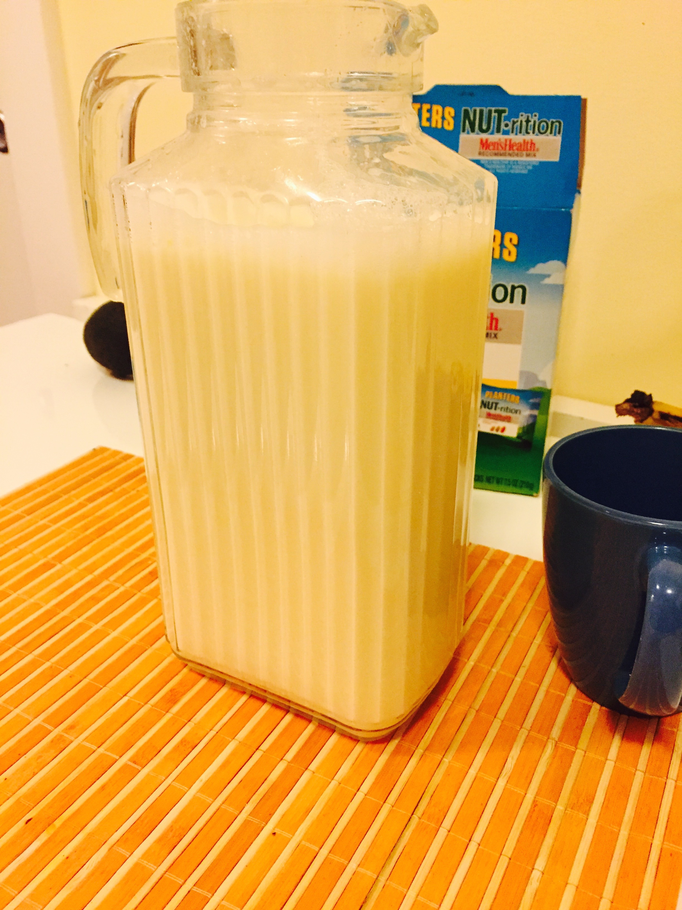 DrinkIt |
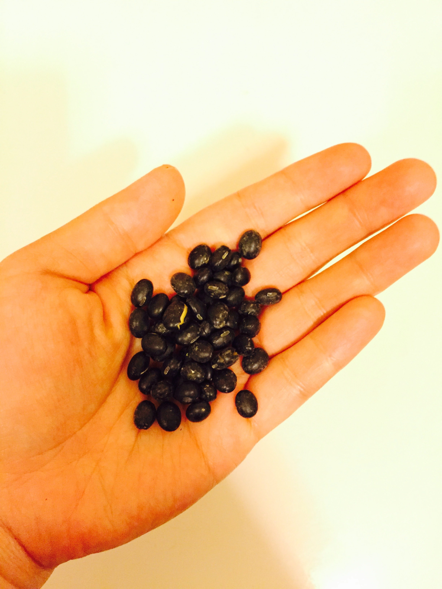 More Beans |
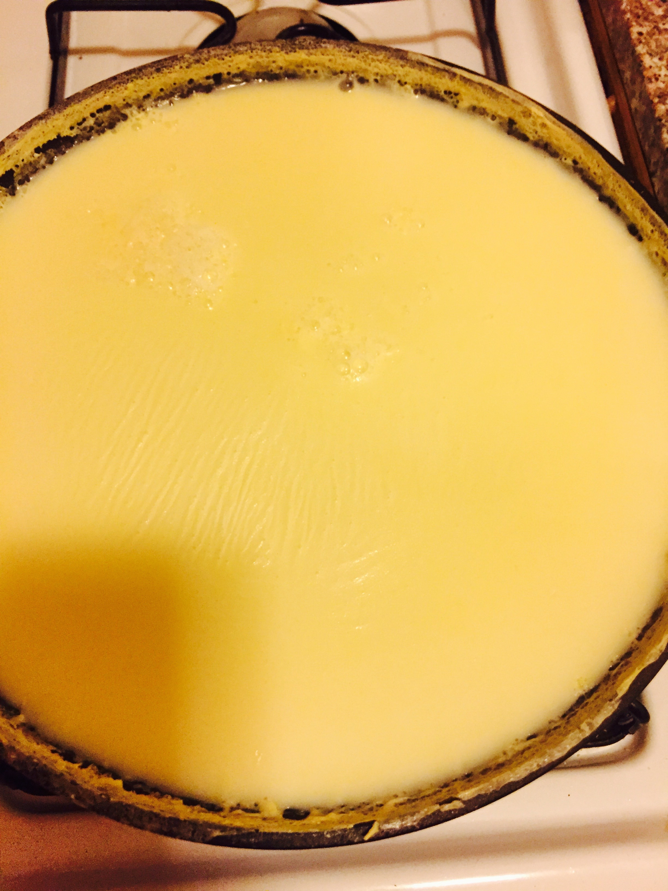 Fresh Yuba |
Ingredients: Soy+Water
| 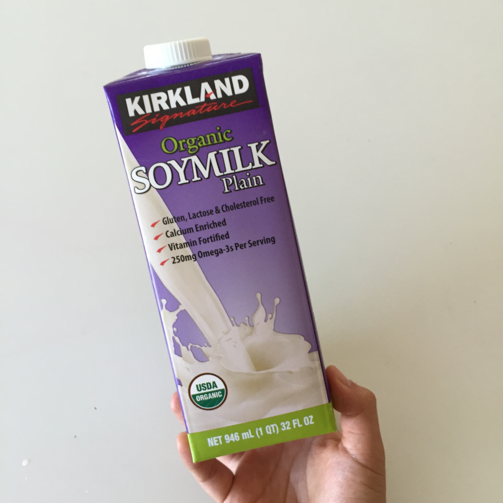 | 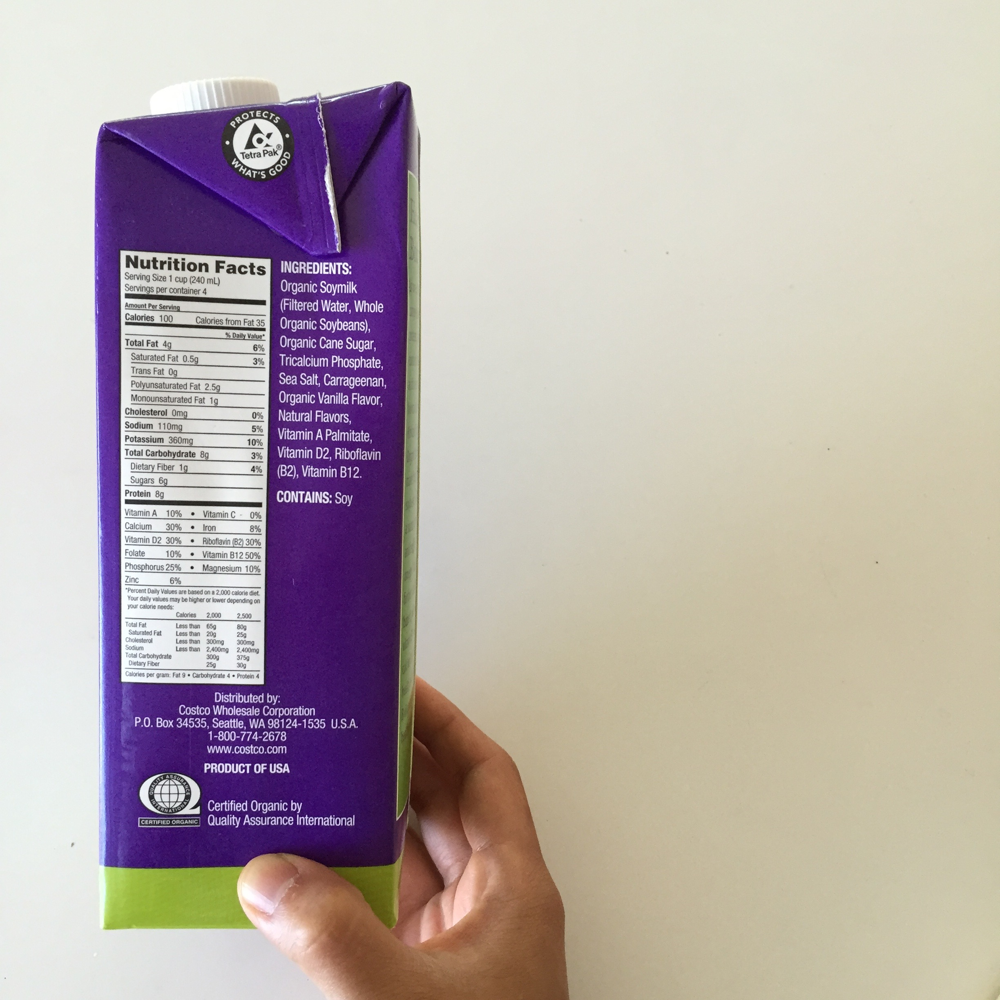 | Kirkland Organic Soymilk Plain is not exactly plain. Besides just the main ingredients Soybeans and Water, it also contains Organic Cane Sugar, Tricalcium Phosphate, Salt, Carageenan, Organic Vanilla Flavor as well as other "natural flavors". This soy milk does not make it conducive for a lot of the wonderful recipes and products that can be made from soy. Kirkland is the only brand we review here which has a list of ingredients beyond just soy + water. Some of the other well-known brands are: Silk, Soy Dream, Lucerne SoyMilk, Better Than Milk (amongst others) |
| 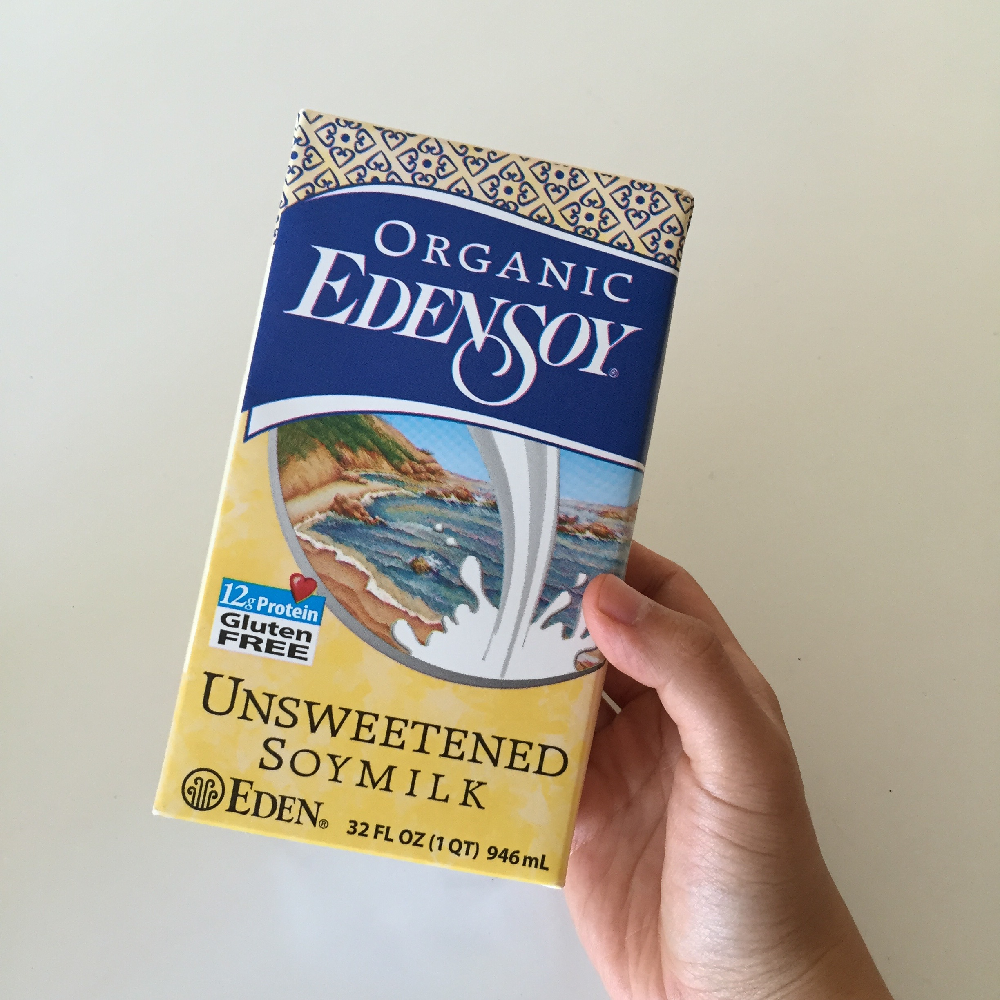 | 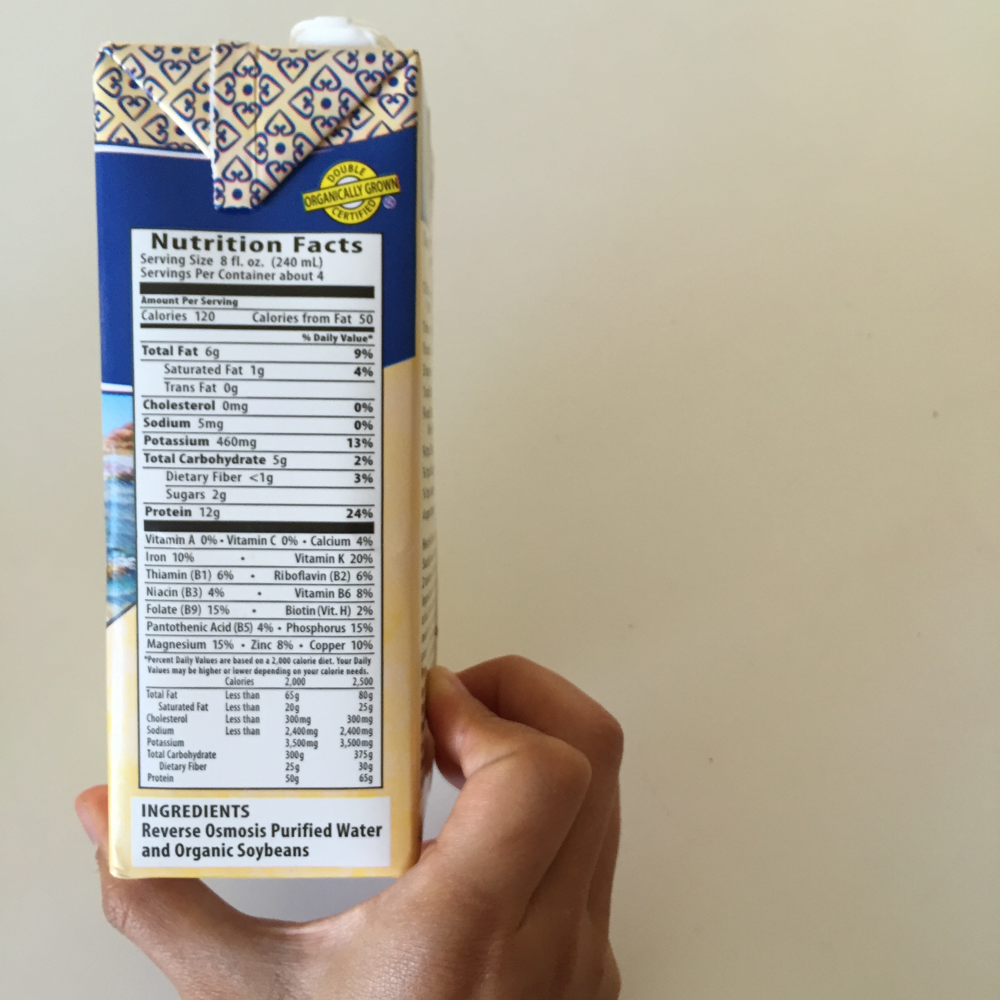 | EdenSoy is quite delicious. It tastes creamier than some of the other brands but this is not because it has extra ingredients. Rather, it simply has a higher density of soybean to water ratio. It's sealed in the cardboard box and has a long enough shelf-life to be carried in Grocery Store. The only thing that you won't get with this brand of Soy Milk is the fresh beany taste that is enjoyed in many recipes. |
| 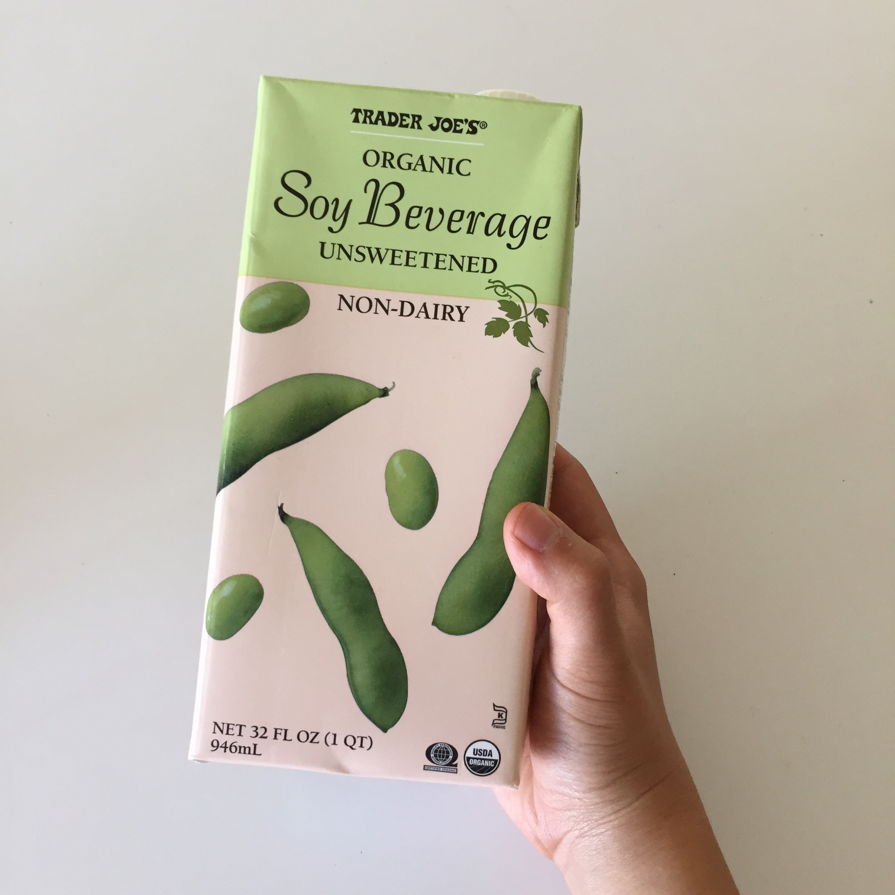 | 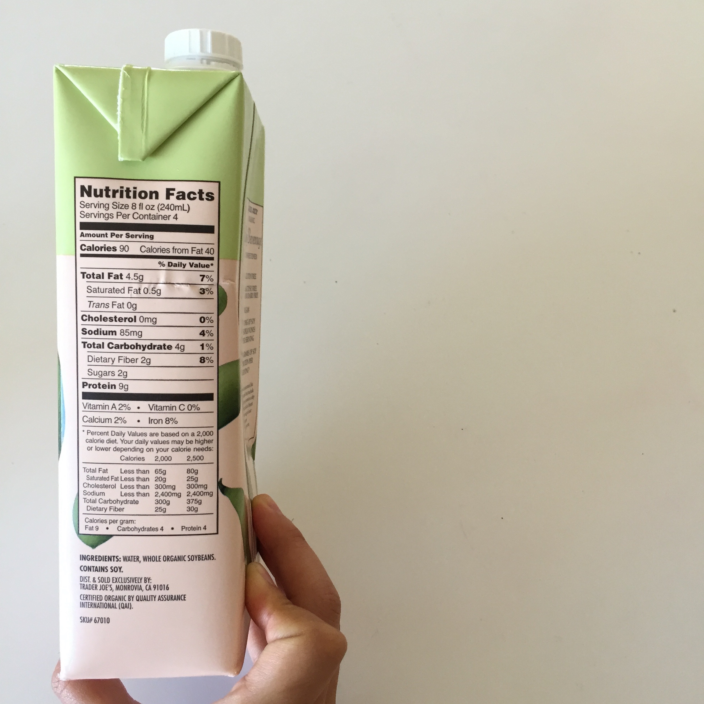 | Trader Joe's Soy Beverage is aptly named in that it doesn't try to be a "milk" like many of the other brands do. It's on the lighter side (which is much nicer as a sweetened drink). Calorically, there are only 90 calories per serving vs. Eden Soy's creamier version at 120. |
| 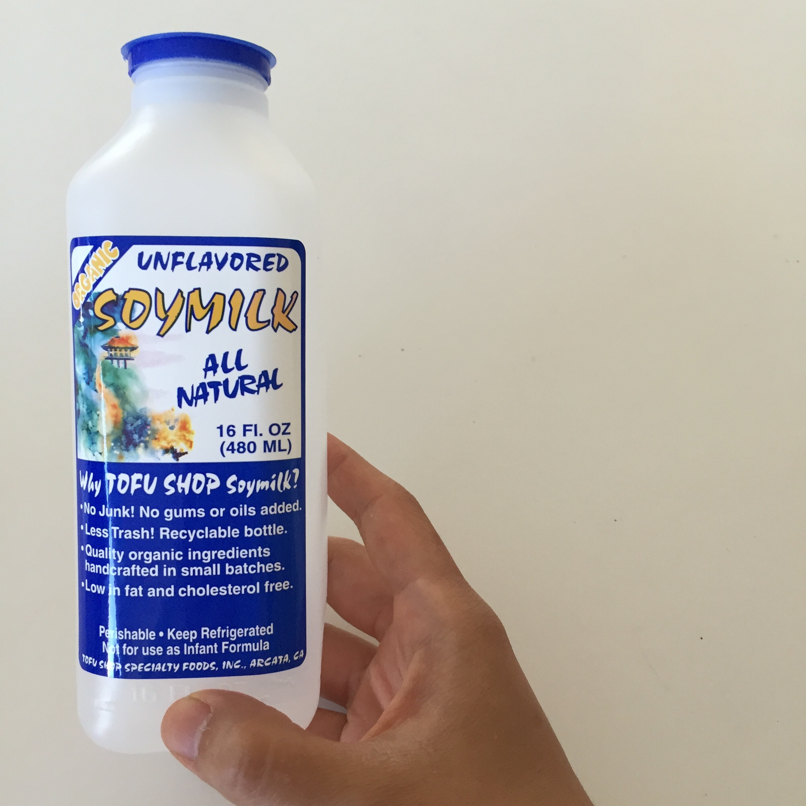 | 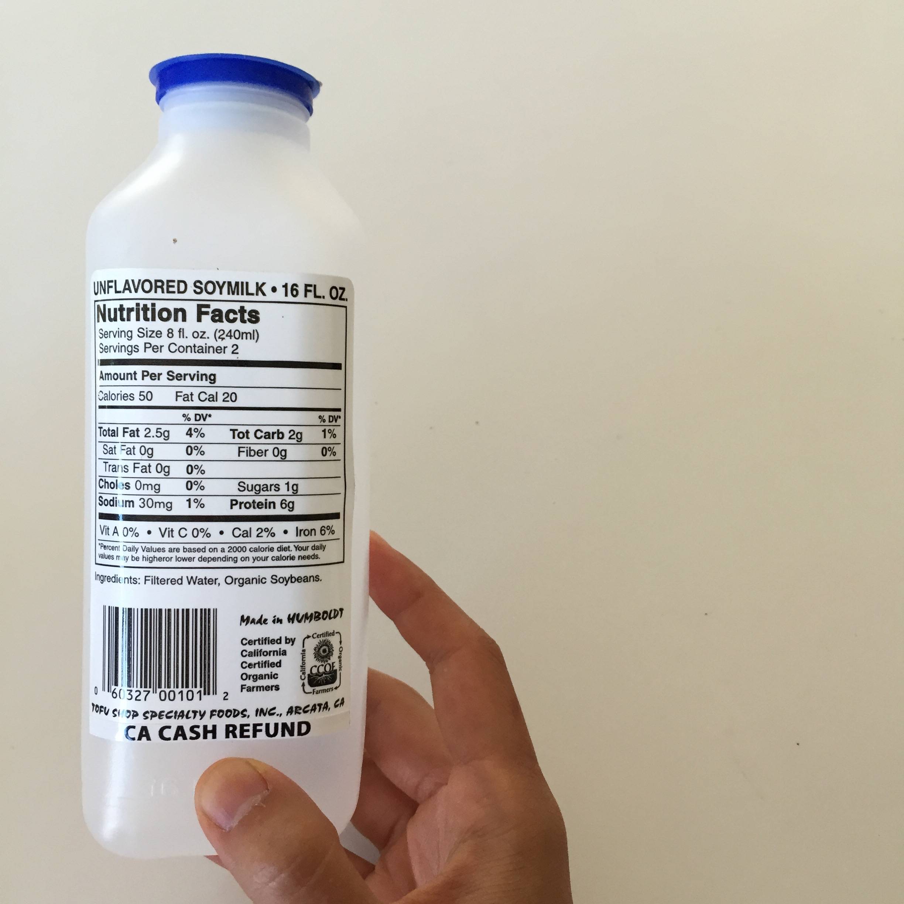 | Many smaller stops like tofuShop make fresher versions of SoyMilk for store shelves. These versions must be refrigerated and consumed in a few days after opened. Taste-wise, they have the delicious and familiar taste that many Asian daily cuisine require. Also, the Yuba and other savory products they can produce are that familiar bean flavor that is enjoyed by so many around the world. |